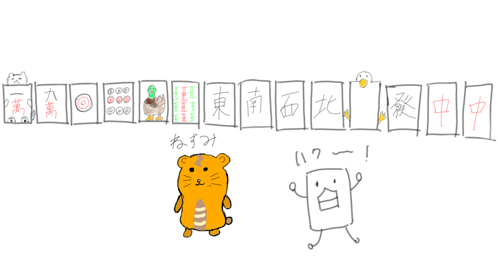

麻雀点数表示ページにゃ
局を選択するにゃ:
東1
東2
東3
東4
南1
南2
南3
南4
本場を選択するにゃ:
0本場
1本場
2本場
3本場
4本場
5本場
6本場
7本場
8本場
9本場
プレイヤー1
:
未設定
点
プラス
マイナス
0
プレイヤー3
:
未設定
点
プラス
マイナス
0
プレイヤー4
:
未設定
点
プラス
マイナス
0
プレイヤー2
:
未設定
点
プラス
マイナス
0
更新にゃ
点数リセットにゃ
